目录
目录Entity实体注意点Spring Boot JPA 命名规则对于Dao层接口的扩展定制Banner修改Banner信息关闭BannerSpring Boot配置相关Spring Boot的配置文件SpringMVC基础配置(注解配置)SpringMVC常用配置Spring常用配置类型安全的配置日志配置Profile配置问题从Session中获取域对象的三种方法1. 利用@SessionAttribute进行获取2. 利用@SessionAttributes进行获取3. 直接通过Session获取结论Controller接收POST请求form-data格式JSON格式将Spring Boot导出为JAR包访问HTML页面有关thymeleaf的配置thymeleaf介绍标准表达式语法变量表达式选择(星号)表达式文字国际化表达式URL表达式变量表达式和星号表达有什么区别吗？表达式支持的语法字面（Literals）文本操作（Text operations）算术运算（Arithmetic operations）布尔操作（Boolean operations）比较和等价(Comparisons and equality)条件运算符（Conditional operators）常用th标签
Entity实体注意点
entity实体的@Column注解问题：建议下划线分割。
例如数据表中有productName字段，实体中应当这样写
@Column(name = "productname")
private String productName;
或者
@Column(name = "product_name")
private String productName;
Spring Boot JPA 命名规则
以下表格摘录自官方文档
| Keyword | Sample | JPQL snippet |
|---|---|---|
| And | findByLastnameAndFirstname | … where x.lastname = ?1 and x.firstname = ?2 |
| Or | findByLastnameOrFirstname | … where x.lastname = ?1 or x.firstname = ?2 |
| Between | findByStartDateBetween | … where x.startDate between 1? and ?2 |
| LessThan | findByAgeLessThan | … where x.age < ?1 |
| GreaterThan | findByAgeGreaterThan | … where x.age > ?1 |
| After | findByStartDateAfter | … where x.startDate > ?1 |
| Before | findByStartDateBefore | … where x.startDate < ?1 |
| IsNull | findByAgeIsNull | … where x.age is null |
| IsNotNull,NotNull | findByAge(Is)NotNull | … where x.age not null |
| Like | findByFirstnameLike | … where x.firstname like ?1 |
| NotLike | findByFirstnameNotLike | … where x.firstname not like ?1 |
| StartingWith | findByFirstnameStartingWith | … where x.firstname like ?1 (parameter bound with appended %) |
| EndingWith | findByFirstnameEndingWith | … where x.firstname like ?1 (parameter bound with prepended %) |
| Containing | findByFirstnameContaining | … where x.firstname like ?1 (parameter bound wrapped in %) |
| OrderBy | findByAgeOrderByLastnameDesc | … where x.age = ?1 order by x.lastname desc |
| Not | findByLastnameNot | … where x.lastname <> ?1 |
| In | findByAgeIn(Collection ages) | … where x.age in ?1 |
| NotIn | findByAgeNotIn(Collection age) | … where x.age not in ?1 |
| True | findByActiveTrue() | … where x.active = true |
| False | findByActiveFalse() | … where x.active = false |
对于Dao层接口的扩展
一般我们的Dao层接口继承JpaRepository接口，该接口提供了基本的CURD操作，但是我们如果想更加细化的进行数据库操作，如何处理？
新建一个接口，然后继承该接口，编写具体实现即可
例如：
1public interface DemoDaoI extends JpaRepository<TDemo, String> {2 List<TDemo> findByName(String name);3 List<TDemo> findByrecId(String id);4}DemoDaoI接口继承了JpaRepository接口，此时我们再定义一个DemoRepositoryCustom的接口，进行更加个性化、细致化的操作。
注意：接口类名后的
Custom后缀是固定的，不能自定义！，即：xxxxCustom
DemoRepositoryCustom接口：
xxxxxxxxxx41public interface DemoRepositoryCustom {2 void test();3 String queryAge();4}DemoRepositoryCustom接口的实现类，DemoRepositoryCustomImpl:
x1public class DemoRepositoryCustomImpl implements DemoRepositoryCustom {2 3 4 private EntityManager entityManager;567 8 public void test() {9 List<Object[]> cities = entityManager.createNativeQuery("select name from T_Demo").getResultList();10 for (Object objs : cities) {11 System.out.print("Val:" + objs);12 }13 }1415 16 public int queryAge() {17 return 0;18 }19}调用：
xxxxxxxxxx211package com.springboot2.controller;23import com.springboot2.dao.DemoDaoI;4import com.springboot2.entity.TDemo;5import org.springframework.beans.factory.annotation.Autowired;67import java.util.List;8910public class DataController {12 13 DemoDaoI demoDaoI;1415 ("/demo")16 public List<TDemo> getDemo(String name){17 demoDaoI.test();18 return null;19 }20}21相关参考资料：Spring Boot下如何自定义Repository中的DAO方法
定制Banner
修改Banner信息
我们在启动Spring Boot项目的时候，在控制台会默认输出一个启动图案，如下：

1.在src/main/resources下新建一个banner.txt文档 2.通过http://patorjk.com/software/taag网站生成需要的字符，将字符拷贝到步骤1所创建的txt文档中，比如我这里为Hello Sang！生成字符，如下：
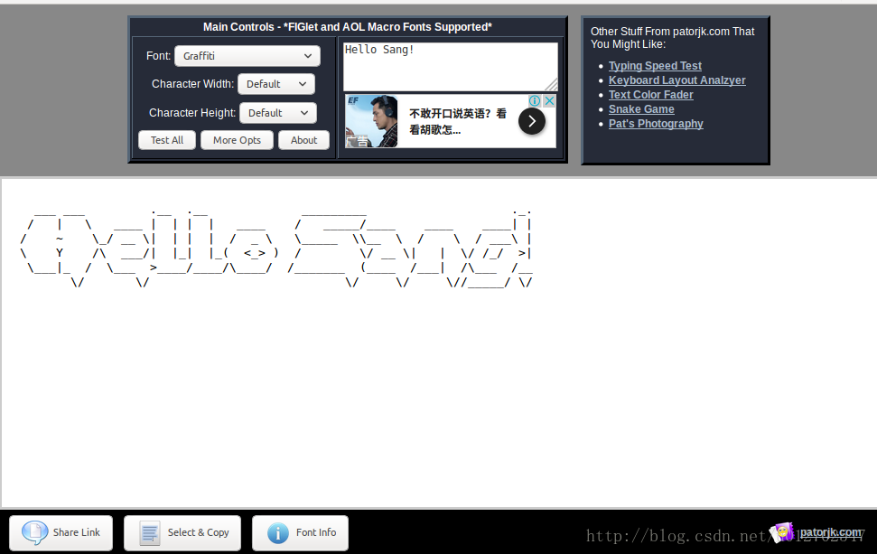 点击左下角的选择和拷贝按钮，将这个字符拷贝到txt文档中，然后再启动项目，这个时候控制台输出的文本就会自动改变，如下： 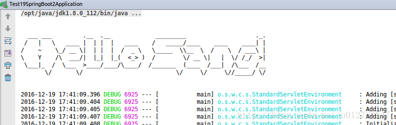
关闭Banner
可以修改当然也可以关闭，关闭Banner需要我们稍微修改一下main方法中的代码，如下：
xxxxxxxxxx51public static void main(String[] args) {2 SpringApplicationBuilder builder = new SpringApplicationBuilder(Test19SpringBoot2Application.class);3 //修改Banner的模式为OFF4 builder.bannerMode(Banner.Mode.OFF).run(args);5}OK，如此修改之后当我们再次启动Project的时候就看不到Banner了。
Spring Boot配置相关
Spring Boot的配置文件
Spring Boot使用一个全局的配置文件application.properties或者application.yml，配置文件放在src/main/resources目录下。properties是我们常见的一种配置文件，Spring Boot不仅支持properties这种类型的配置文件，也支持yaml语言的配置文件，我这里以properties类型的配置文件为例来看几个案例。
1.修改Tomcat默认端口和默认访问路径
Tomcat默认端口是8080，我将之改为8081，默认访问路径是http://localhost:8080，我将之改为http://localhost:8081/helloboot,我们来看看这两个需求要怎么样通过简单的配置来实现。 很简单，在application.properties文件中添加如下代码：
xxxxxxxxxx21server.context-path=/helloboot2server.port=808112
然后再启动Project，在浏览器中就得这样来访问了： 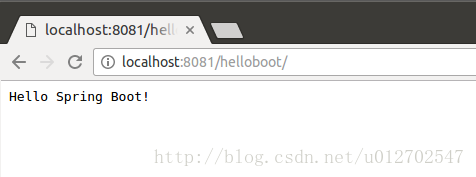
SpringMVC基础配置(注解配置)
参考地址：点击此处
SpringMVC常用配置
参考地址：点击此处
Spring常用配置
参考地址：点击此处
类型安全的配置
我们可以使用基于类型安全的配置方式，就是将properties属性和一个Bean关联在一起，这样使用起来会更加方便。我么来看看这种方式怎么实现。
1.在src/main/resources文件夹下创建文件book.properties
文件内容如下：
xxxxxxxxxx31book.name=红楼梦2book.author=曹雪芹3book.price=28123
2.创建Book Bean,并注入properties文件中的值
代码如下：
xxxxxxxxxx311(prefix = "book",locations = "classpath:book.properties")3public class BookBean {4 private String name;5 private String author;6 private String price;78 public String getName() {9 return name;10 }1112 public void setName(String name) {13 this.name = name;14 }1516 public String getAuthor() {17 return author;18 }1920 public void setAuthor(String author) {21 this.author = author;22 }2324 public String getPrice() {25 return price;26 }2728 public void setPrice(String price) {29 this.price = price;30 }31}prefix是指前缀，location指定要注入文件的位置。
3.添加路径映射
在Controller中添加如下代码注入Bean：
xxxxxxxxxx21@Autowired2private BookBean bookBean;12
添加路径映射：
xxxxxxxxxx41("/book")2public String book() {3 return "Hello Spring Boot! The BookName is "+bookBean.getName()+";and Book Author is "+bookBean.getAuthor()+";and Book price is "+bookBean.getPrice();4}运行效果如下： 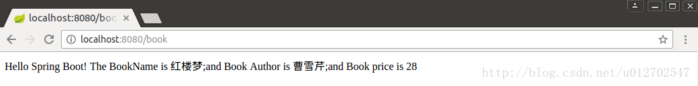
日志配置
默认情况下Spring Boot使用Logback作为日志框架，也就是我们前面几篇博客中用到的打印日志方式，当然如果有需要我们可以手动配置日志级别以及日志输出位置，相比于我们在Spring容器中写的日志输出代码，这里的配置简直就是小儿科了，只需要在application.properties中添加如下代码：
xxxxxxxxxx21logging.file=/home/sang/workspace/log.log2logging.level.org.springframework.web=debug12
上面表示配置日志输出位置，下面配置日志级别。
Profile配置问题
在 Spring常用配置 这篇文章中，我们已经介绍了Profile的作用，已经如何在Spring框架下使用Profile，但是当时小伙伴们看到了还是稍微有点麻烦，在Spring Boot 中系统提供了更为简洁的方式。全局Profile配置我们使用application-{profile}.properties来定义，然后在application.properties中通过spring.profiles.active来指定使用哪个Profile。OK，那么接下来我们来看一个简单的案例。
1.在src/main/resources文件夹下定义不同环境下的Profile配置文件，文件名分别为application-prod.properties和application-dev.properties，这两个前者表示生产环境下的配置，后者表示开发环境下的配置，如下：
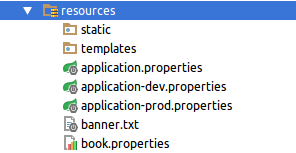
application-prod.properties:
xxxxxxxxxx11server.port=80811
application-dev.properties:
xxxxxxxxxx11server.port=80801
然后在application.properties中进行简单配置，如下：
xxxxxxxxxx11spring.profiles.active=dev1
这个表示使用开发环境下的配置。然后运行项目，我们得通过8080端口才可以访问：
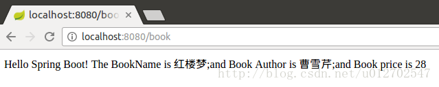
如果想换为生产环境，只需要把spring.profiles.active=dev改为spring.profiles.active=prod即可，当然访问端口这是也变为8081了，如下：
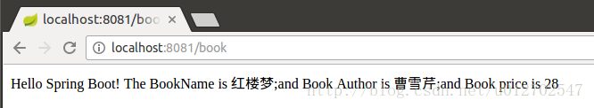
从Session中获取域对象的三种方法
1. 利用@SessionAttribute进行获取
这是最简单直接的方法，可以直接在方法的参数中直接进行注入，如下：
xxxxxxxxxx41// 可以直接从Session中抓取域对象2public Account login( Account account) {3 return account;4}上面的方法虽然简单，但是唯一的缺点是Spring Framework 4.3之前的版本不支持。
2. 利用@SessionAttributes进行获取
与@SessionAttribute不同的是，@SessionAttributes不仅多了一个复数“s”，而且从Spring Framework 2.5版本就开始支持，此外@SessionAttributes还必须注解在类上，这样类里面的所有方法就可以直接通过@ModelAttribute获取域对象，所以总结起来，@SessionAttributes抓取域对象分为两步；
- 在类上添加注解@SessionAttributes；
- 在方法的参数中通过@ModelAttribute获取域对象；
xxxxxxxxxx91("account")3public class SecurityContextController {45 ("/account")6 public Account login(("account") Account account) {7 return account;8 }9}此外，我们不妨把@SessionAttributes的官方说明重读一遍，以了解它的真正含义，如下：
xxxxxxxxxx51This will typically list the names of model attributes2which should be transparently stored in the session or some conversational storage,3serving as form-backing beans.4Declared at the type level,5applying to the model attributes that the annotated handler class operates on.
大概意思是@SessionAttributes会列出存储在Session或会话中的域对象，就像表单的后台对象一样提供服务，并且必须注解在类型上，并应用于此类的域对象上。
3. 直接通过Session获取
这个更简单，直接通过HttpSession获取，但需要更多的类型判断与转换代码，如下：
xxxxxxxxxx91("/account")2public Account account(HttpSession session) {3 Object obj = session.getAttribute("account");4 if(obj instanceof Account) {5 Account account = (Account) obj;6 return account;7 }8 return null;9}为了简化Session的调用，充分利用@ModelAttribute方法的初始化特性，我们还可以改进为如下的形式：
xxxxxxxxxx211public class SecurityContextController {23 ThreadLocal<Account> authContext = new ThreadLocal<>();45 // 此方法会在每次请求前调用（这个类的处理方法）6 7 public void initUser(HttpSession session) {8 Object obj = session.getAttribute("account");9 if(obj instanceof Account) {10 Account user = (Account) obj;11 authContext.set(user);12 }13 }1415 // 现在可直接使用存储的属性16 ("/getUser")17 public AegisUser get() {18 return authContext.get();19 }2021}结论
在Spring Boot中，从Session中获取域对象还是比较容易的，唯一可能引起误解或较难使用的只有@SessionAttributes，一定要记住它的二个使用步骤。
Controller接收POST请求
详情参考：spring boot get和post请求,以及requestbody为json串时候的处理
form-data格式
xxxxxxxxxx61(value = "/login", method = RequestMethod.POST)2public String loginByPost((value = "name", required = true) String name,3 (value = "pwd", required = true) String pwd) {4 System.out.println("hello post");5 return "hello post";6}JSON格式
xxxxxxxxxx51(value = "/loginbean", method = RequestMethod.POST)2public String loginByPost2( LoginModel loginModel) {3 System.out.println("hello post,LoginModel,"+loginModel.getName());4 return "hello post,LoginModel";5}通过@RequestBody注解，框架会把格式为JSON的串自动转换为对应的Bean对象。
将Spring Boot导出为JAR包
- 打包前确认项目可以正常运行,打开Project Structure 快捷键 Ctrl+Shift+Alt+S,或者点击下图图标

- 将代码打包,操作如下图所示:
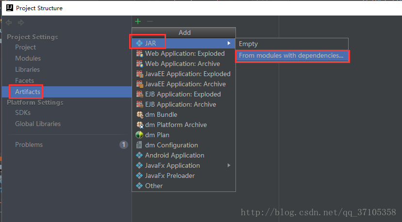
- 如下图,module选择需要打包的项目名;Main Class 选择项目的主程序类;输出目录确保是空的,如果里面有一个MANIFEST.MF文件,要先删除掉
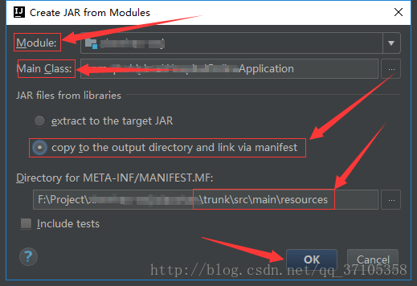
如果存在就删除,不存在就不必理会

- 现在将设置都搞定好后,就开始打包,如果初次打包按照以下流程
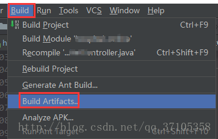
点击Build Artifacts后会出现下图的弹窗
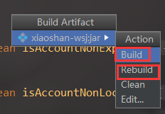如果是初次打包点击build,如果不是请点击Rebuild
- 最后找到输出目录即可
 所有的输出文件都在out目录下,运行 java -jar xxxx.jar即可运行项目
所有的输出文件都在out目录下,运行 java -jar xxxx.jar即可运行项目
访问HTML页面
在pom.xml加入
xxxxxxxxxx381 <parent>2 <groupId>org.springframework.boot</groupId>3 <artifactId>spring-boot-starter-parent</artifactId>4 <version>1.5.2.RELEASE</version>5 </parent>6 <dependencies>7 <dependency>8 <groupId>org.springframework.boot</groupId>9 <artifactId>spring-boot-starter-web</artifactId>10 </dependency>11 <dependency>12 <groupId>org.mybatis.spring.boot</groupId>13 <artifactId>mybatis-spring-boot</artifactId>14 <version>1.2.0</version>15 </dependency>16 <dependency>17 <groupId>mysql</groupId>18 <artifactId>mysql-connector-java</artifactId>19 </dependency>20 <dependency>21 <groupId>org.springframework.boot</groupId>22 <artifactId>spring-boot-starter-data-jpa</artifactId>23 </dependency>24 25 <!--解析html包，，，，重要！！！！不然找不到页面-->26 <dependency>27 <groupId>net.sourceforge.nekohtml</groupId>28 <artifactId>nekohtml</artifactId>29 <version>1.9.22</version>30 </dependency>31 <dependency>32 <groupId>org.springframework.boot</groupId>33 <artifactId>spring-boot-starter-thymeleaf</artifactId>34 </dependency>35 <!--解析html包-->36 37 38 </dependencies>在resources\templates\hello.html
xxxxxxxxxx111<html xmlns="http://www.w3.org/1999/xhtml" xmlns:th="http://www.thymeleaf.org"3 xmlns:sec="http://www.thymeleaf.org/thymeleaf-extras-springsecurity3">4<head>5 <title>Hello World!</title>6</head>7<body>8<h1 th:inline="text">Hello.v.2</h1>9<p th:text="${hello}"></p>10</body>11</html>
在Controller中加入
xxxxxxxxxx161 //注意这里必须为@Controller,不能是@RestController ，因为@RestController 返回的是字符串结果2//@RestController3public class HelloController {45 /**6 * 本地访问内容地址 ：http://localhost:8080/hello7 *8 * @param map9 * @return10 */11 ("/hello")12 public String helloHtml(HashMap<String, Object> map) {13 map.put("hello", "欢迎进入HTML页面");14 return "/index.html";15 }16}启动，然后输入localhost:8080/hello
会跳转到页面
注意：
- 必须加入thymeleaf包，不然找不到页面。
- Controller的注解必须是
@Controller而不是@RestController
有关thymeleaf的配置
配置application.properties
注意 1.结尾一定要有------ #thymeleaf end --------- 否则掉坑
2.#模板编码 spring.thymeleaf.mode=LEGACYHTML5
要想使用LEGACYHTML5这个编码格式必须引入 上面pom中‘避坑包’ 否则用不了
肯定有人要问为什么不用HTML5 ，你可以试试
因为你可能会发现在默认配置下，thymeleaf对.html的内容要求很严格，比如，
如果少最后的标签封闭符号/，就会报错而转到错误页。也比如你在使用Vue.js这样的库，然后有
这样的html代码， 也会被thymeleaf认为不符合要求而抛出错误。因此，建议增加下面这段：
spring.thymeleaf.mode = LEGACYHTML5 spring.thymeleaf.mode的默认值是HTML5，其实是一个很严格的检查，改为LEGACYHTML5可以得到一个可能更友好亲切的格式要求。
需要注意的是，LEGACYHTML5需要搭配一个额外的库NekoHTML才可用 也就时上文的避坑包
xxxxxxxxxx311#<!-- 关闭thymeleaf缓存 开发时使用 否则没有实时画面-->2spring.thymeleaf.cache=false34## 检查模板是否存在，然后再呈现5spring.thymeleaf.check-template-location=true67#Content-Type值8spring.thymeleaf.content-type=text/html910#启用MVC Thymeleaf视图分辨率11spring.thymeleaf.enabled=true1213## 应该从解决方案中排除的视图名称的逗号分隔列表14##spring.thymeleaf.excluded-view-names=1516#模板编码17spring.thymeleaf.mode=LEGACYHTML51819# 在构建URL时预先查看名称的前缀.可根据实际情况填写，例如：classpath:/static/pages20spring.thymeleaf.prefix=classpath:/static/2122# 构建URL时附加查看名称的后缀.23spring.thymeleaf.suffix=.html2425# 链中模板解析器的顺序26#spring.thymeleaf.template-resolver-order= o2728# 可以解析的视图名称的逗号分隔列表29#spring.thymeleaf.view-names=3031#thymeleaf end注意：静态资源，例如html、js、css等放在resources/static下面
thymeleaf介绍
简单说， Thymeleaf 是一个跟 Velocity、FreeMarker 类似的模板引擎，它可以完全替代 JSP 。相较与其他的模板引擎，它有如下三个极吸引人的特点：
- Thymeleaf 在有网络和无网络的环境下皆可运行，即它可以让美工在浏览器查看页面的静态效果，也可以让程序员在服务器查看带数据的动态页面效果。这是由于它支持 html 原型，然后在 html 标签里增加额外的属性来达到模板+数据的展示方式。浏览器解释 html 时会忽略未定义的标签属性，所以 thymeleaf 的模板可以静态地运行；当有数据返回到页面时，Thymeleaf 标签会动态地替换掉静态内容，使页面动态显示。
- Thymeleaf 开箱即用的特性。它提供标准和spring标准两种方言，可以直接套用模板实现JSTL、 OGNL表达式效果，避免每天套模板、该jstl、改标签的困扰。同时开发人员也可以扩展和创建自定义的方言。
- Thymeleaf 提供spring标准方言和一个与 SpringMVC 完美集成的可选模块，可以快速的实现表单绑定、属性编辑器、国际化等功能。
标准表达式语法
它们分为四类：
- 变量表达式
- 选择或星号表达式
- 文字国际化表达式
- URL表达式
变量表达式
变量表达式即OGNL表达式或Spring EL表达式(在Spring术语中也叫model attributes)。如下所示：
${session.user.name}
它们将以HTML标签的一个属性来表示：
xxxxxxxxxx21<span th:text="${book.author.name}"> 2<li th:each="book : ${books}">
选择(星号)表达式
选择表达式很像变量表达式，不过它们用一个预先选择的对象来代替上下文变量容器(map)来执行，如下： *{customer.name}
被指定的object由th:object属性定义：
xxxxxxxxxx51<div th:object="${book}"> 2 ... 3 <span th:text="*{title}">...</span> 4 ... 5</div>
文字国际化表达式
文字国际化表达式允许我们从一个外部文件获取区域文字信息(.properties)，用Key索引Value，还可以提供一组参数(可选).
#{main.title}
#{message.entrycreated(${entryId})}
可以在模板文件中找到这样的表达式代码：
xxxxxxxxxx71<table>2...3<th th:text="#{header.address.city}">...</th>4<th th:text="#{header.address.country}">...</th>5...6</table>7
URL表达式
URL表达式指的是把一个有用的上下文或回话信息添加到URL，这个过程经常被叫做URL重写。 @{/order/list}
URL还可以设置参数： @{/order/details(id=${orderId})}
相对路径： @{../documents/report}
让我们看这些表达式：
xxxxxxxxxx21<form th:action="@{/createOrder}">2<a href="main.html" th:href="@{/main}">
变量表达式和星号表达有什么区别吗？
如果不考虑上下文的情况下，两者没有区别；星号语法评估在选定对象上表达，而不是整个上下文。
什么是选定对象？就是父标签的值，如下：
xxxxxxxxxx51<div th:object="${session.user}">2<p>Name: <span th:text="*{firstName}">Sebastian</span>.</p>3<p>Surname: <span th:text="*{lastName}">Pepper</span>.</p>4<p>Nationality: <span th:text="*{nationality}">Saturn</span>.</p>5</div>
这是完全等价于：
xxxxxxxxxx51<div th:object="${session.user}">2<p>Name: <span th:text="${session.user.firstName}">Sebastian</span>.</p>3<p>Surname: <span th:text="${session.user.lastName}">Pepper</span>.</p>4<p>Nationality: <span th:text="${session.user.nationality}">Saturn</span>.</p>5</div>
当然，美元符号和星号语法可以混合使用：
xxxxxxxxxx51<div th:object="${session.user}">2<p>Name: <span th:text="*{firstName}">Sebastian</span>.</p>3<p>Surname: <span th:text="${session.user.lastName}">Pepper</span>.</p>4<p>Nationality: <span th:text="*{nationality}">Saturn</span>.</p>5</div>
表达式支持的语法
字面（Literals）
- 文本文字（Text literals）: ‘one text’, ‘Another one!’,…
- 数字文本（Number literals）: 0, 34, 3.0, 12.3,…
- 布尔文本（Boolean literals）: true, false
- 空（Null literal）: null
- 文字标记（Literal tokens）: one, sometext, main,…
文本操作（Text operations）
- 字符串连接(String concatenation): +
- 文本替换（Literal substitutions）: |The name is ${name}|
算术运算（Arithmetic operations）
- 二元运算符（Binary operators）: +, -, *, /, %
- 减号（单目运算符）Minus sign (unary operator): -
布尔操作（Boolean operations）
- 二元运算符（Binary operators）:and, or
- 布尔否定（一元运算符）Boolean negation (unary operator):!, not
比较和等价(Comparisons and equality)
- 比较（Comparators）: >, <, >=, <= (gt, lt, ge, le)
- 等值运算符（Equality operators）:==, != (eq, ne)
条件运算符（Conditional operators）
- If-then: (if) ? (then)
- If-then-else: (if) ? (then) : (else)
- Default: (value) ?: (defaultvalue)
所有这些特征可以被组合并嵌套：
'User is of type ' + ({user.type} ?: 'Unknown'))
常用th标签
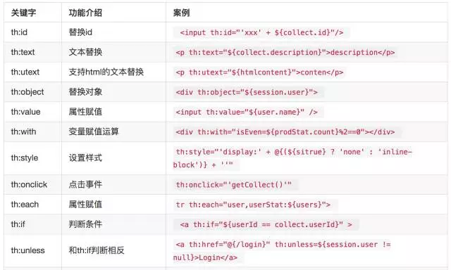
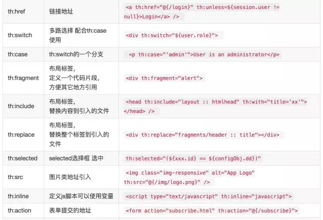
还有非常多的标签，这里只列出最常用的几个,由于一个标签内可以包含多个th:x属性，其生效的优先级顺序为: include,each,if/unless/switch/case,with,attr/attrprepend/attrappend,value/href,src ,etc,text/utext,fragment,remove。
几种常用的使用方法
1、赋值、字符串拼接
description
字符串拼接还有另外一种简洁的写法
2、条件判断 If/Unless
Thymeleaf中使用th:if和th:unless属性进行条件判断，下面的例子中，标签只有在th:if中条件成立时才显示：
th:unless于th:if恰好相反，只有表达式中的条件不成立，才会显示其内容。
也可以使用 (if) ? (then) : (else) 这种语法来判断显示的内容
3、for 循环
1
Mark
Otto
@mdo
index
iterStat称作状态变量，属性有：
- index:当前迭代对象的index（从0开始计算）
- count: 当前迭代对象的index(从1开始计算)
- size:被迭代对象的大小
- current:当前迭代变量
- even/odd:布尔值，当前循环是否是偶数/奇数（从0开始计算）
- first:布尔值，当前循环是否是第一个
- last:布尔值，当前循环是否是最后一个
4、URL
URL在Web应用模板中占据着十分重要的地位，需要特别注意的是Thymeleaf对于URL的处理是通过语法@{…}来处理的。 如果需要Thymeleaf对URL进行渲染，那么务必使用th:href，th:src等属性，下面是一个例子
设置背景
根据属性值改变背景
几点说明：
- 上例中URL最后的(orderId=${o.id}) 表示将括号内的内容作为URL参数处理，该语法避免使用字符串拼接，大大提高了可读性
- @{…}表达式中可以通过{orderId}访问Context中的orderId变量
- @{/order}是Context相关的相对路径，在渲染时会自动添加上当前Web应用的Context名字，假设context名字为app，那么结果应该是/app/order
5、内联js
内联文本：[[…]]内联文本的表示方式，使用时，必须先用th:inline=”text/javascript/none”激活，th:inline可以在父级标签内使用，甚至作为body的标签。内联文本尽管比th:text的代码少，不利于原型显示。
js附加代码：
/*[+
var msg = 'This is a working application';
+]*/
js移除代码：
/*[- */
var msg = 'This is a non-working template';
/* -]*/
6、内嵌变量
为了模板更加易用，Thymeleaf还提供了一系列Utility对象（内置于Context中），可以通过#直接访问：
- dates ： java.util.Date的功能方法类。
- calendars : 类似#dates，面向java.util.Calendar
- numbers : 格式化数字的功能方法类
- strings : 字符串对象的功能类，contains,startWiths,prepending/appending等等。
- objects: 对objects的功能类操作。
- bools: 对布尔值求值的功能方法。
- arrays：对数组的功能类方法。
- lists: 对lists功能类方法
- sets
- maps
- …
下面用一段代码来举例一些常用的方法：
dates
/*
- Format date with the specified pattern
- Also works with arrays, lists or sets
*/
${#dates.format(date, 'dd/MMM/yyyy HH:mm')}
${#dates.arrayFormat(datesArray, 'dd/MMM/yyyy HH:mm')}
${#dates.listFormat(datesList, 'dd/MMM/yyyy HH:mm')}
${#dates.setFormat(datesSet, 'dd/MMM/yyyy HH:mm')}
/*
- Create a date (java.util.Date) object for the current date and time
*/
${#dates.createNow()}
/*
- Create a date (java.util.Date) object for the current date (time set to 00:00)
*/
${#dates.createToday()}
strings
/*
- Check whether a String is empty (or null). Performs a trim() operation before check
- Also works with arrays, lists or sets
*/
${#strings.isEmpty(name)}
${#strings.arrayIsEmpty(nameArr)}
${#strings.listIsEmpty(nameList)}
${#strings.setIsEmpty(nameSet)}
/*
- Check whether a String starts or ends with a fragment
- Also works with arrays, lists or sets
*/
${#strings.startsWith(name,'Don')} // also array, list and set*
${#strings.endsWith(name,endingFragment)} // also array, list and set*
/*
- Compute length
- Also works with arrays, lists or sets
*/
${#strings.length(str)}
/*
- Null-safe comparison and concatenation
*/
${#strings.equals(str)}
${#strings.equalsIgnoreCase(str)}
${#strings.concat(str)}
${#strings.concatReplaceNulls(str)}
/*
- Random
*/
${#strings.randomAlphanumeric(count)}
使用thymeleaf布局
使用thymeleaf布局非常的方便
定义代码片段
© 2016
在页面任何地方引入：
th:include 和 th:replace区别，include只是加载，replace是替换
返回的HTML如下：
© 2016
下面是一个常用的后台页面布局，将整个页面分为头部，尾部、菜单栏、隐藏栏，点击菜单只改变content区域的页面
任何页面想使用这样的布局值只需要替换中见的 content模块即可
...
也可以在引用模版的时候传参
layout 是文件地址，如果有文件夹可以这样写 fileName/layout:htmlhead
htmlhead 是指定义的代码片段 如 th:fragment=”copy”
源码案例
这里有一个开源项目几乎使用了这里介绍的所有标签和布局，大家可以参考： cloudfavorites。